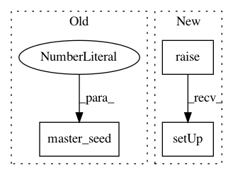

c7585e649aca88cf9e21eb754469630748bb1cfc,tests/attacks/test_knockoff_nets.py,TestKnockoffNetsVectors,setUp,#TestKnockoffNetsVectors#,186
Before Change
cls.y_train = y_train
def setUp(self):
master_seed(1234)
def test_tensorflow_iris(self):
First test for TensorFlow.
After Change
super().setUpClass()
def setUp(self):
super().setUp()
def test_tensorflow_iris(self):
First test for TensorFlow.
In pattern: SUPERPATTERN
Frequency: 3
Non-data size: 3
Instances
Project Name: IBM/adversarial-robustness-toolbox
Commit Name: c7585e649aca88cf9e21eb754469630748bb1cfc
Time: 2020-01-27
Author: beat.buesser@ie.ibm.com
File Name: tests/attacks/test_knockoff_nets.py
Class Name: TestKnockoffNetsVectors
Method Name: setUp
Project Name: IBM/adversarial-robustness-toolbox
Commit Name: 2c0278a4d3d63a5c652ec6e2ab478ee69eb58f9b
Time: 2020-01-29
Author: beat.buesser@ie.ibm.com
File Name: tests/attacks/test_poisoning_attack_svm.py
Class Name: TestSVMAttack
Method Name: setUp
Project Name: IBM/adversarial-robustness-toolbox
Commit Name: c7585e649aca88cf9e21eb754469630748bb1cfc
Time: 2020-01-27
Author: beat.buesser@ie.ibm.com
File Name: tests/attacks/test_knockoff_nets.py
Class Name: TestKnockoffNets
Method Name: setUp